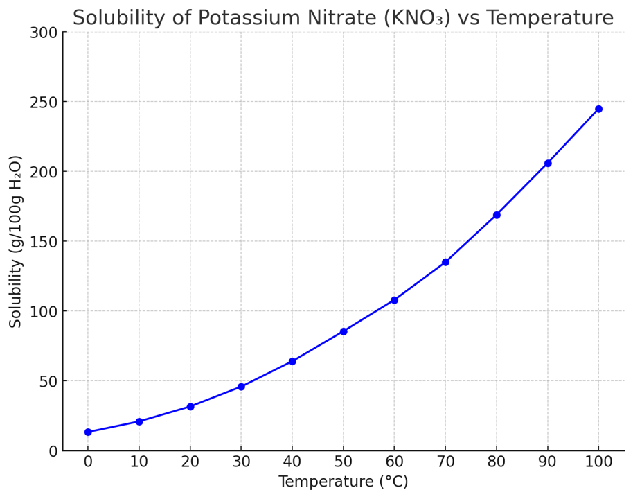

問題
- 再結晶ではどのような操作を行い，何を目的として行うか。
- 固体の溶質が溶解する溶液において，溶媒100gに対して溶ける上限の溶質の質量のことを何というか。
- 再結晶の温度変化が結晶の大きさに与える影響について述べてください。
- 再結晶に適した溶媒・溶質の条件を1つ挙げ、理由を説明せよ。
-
80℃の条件において50gの化合物Aを溶解するために必要な溶媒の最低限の質量を求めよ。また，50gの化合物Aを溶解させた飽和水溶液を20℃に冷却した後に析出する結晶の量を求めよ。ただし，以下の条件を使用すること：
- 80℃での化合物Aの溶解度: 100g/100g
- 20℃での化合物Aの溶解度: 20g/100g
-
以下の溶解度曲線を基にして，次の問いに答えよ。

- a. 20℃のときと50℃のときと80℃のときの硝酸カリウムの溶解度を以下の選択肢から最も適当なものを求めよ。
- 10g 34g 63g 85g 133g 170g
- b. 50℃の条件で200gの水に硝酸カリウムを飽和するまで溶解させた。水溶液全体の質量はいくらになるか。また，この水溶液の質量パーセント濃度を求めよ。
- c. 20℃の硝酸カリウムの飽和水溶液の質量パーセント濃度を求めよ。
- d. 80℃の硝酸カリウムの飽和水溶液100gから10gの水を蒸発させ，50℃まで冷却した。何gの硝酸カリウムが析出するか。
- e. dの水溶液から析出した結晶を完全に取り除き，さらに50gの水を加え，20℃まで冷却した。このとき，新たに結晶は析出するか答えよ。また，析出する場合は何g析出するかも答えること。
解答ページへ